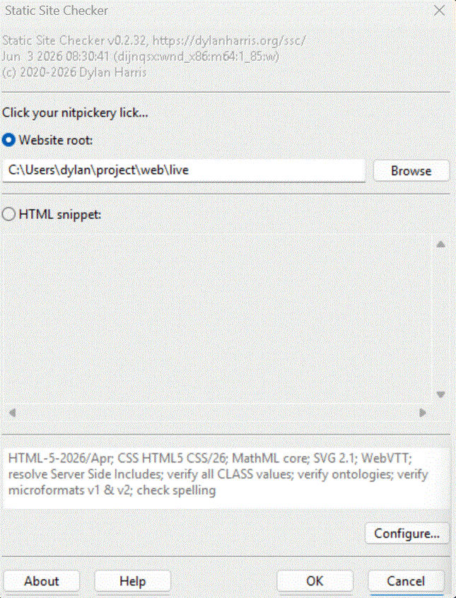

The welcome dialogue appears when you run the GUI version of SSC.
Here, you specify what you want SSC to analyse, either website source code, or an HTML snippet.
By default, SSC will apply the HTML and other standards that were current when that version of SSC was written. These details, along with a list of SSC options to be applied, is shown in the summary.
If you prefer to apply earlier standards andor other options, click on Configure.
When you have specified what you want SSC to analyse, click on OK.
The About, Cancel, and Help buttons behave in the usual way.
SSC can also be managed with command line switches and configuration files.